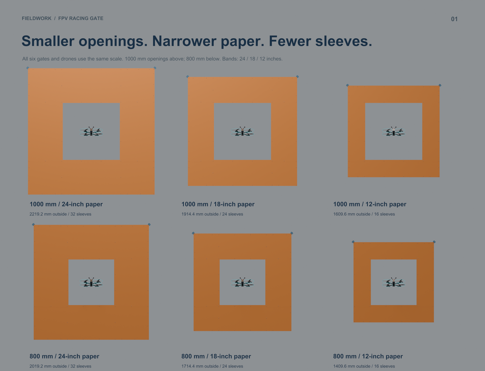
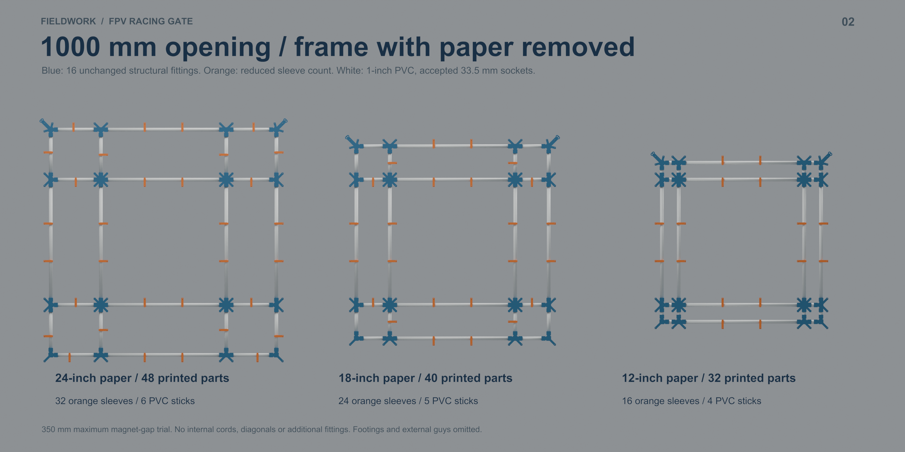
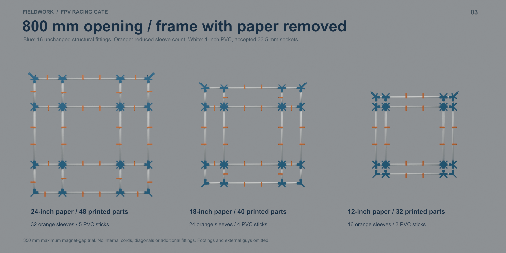
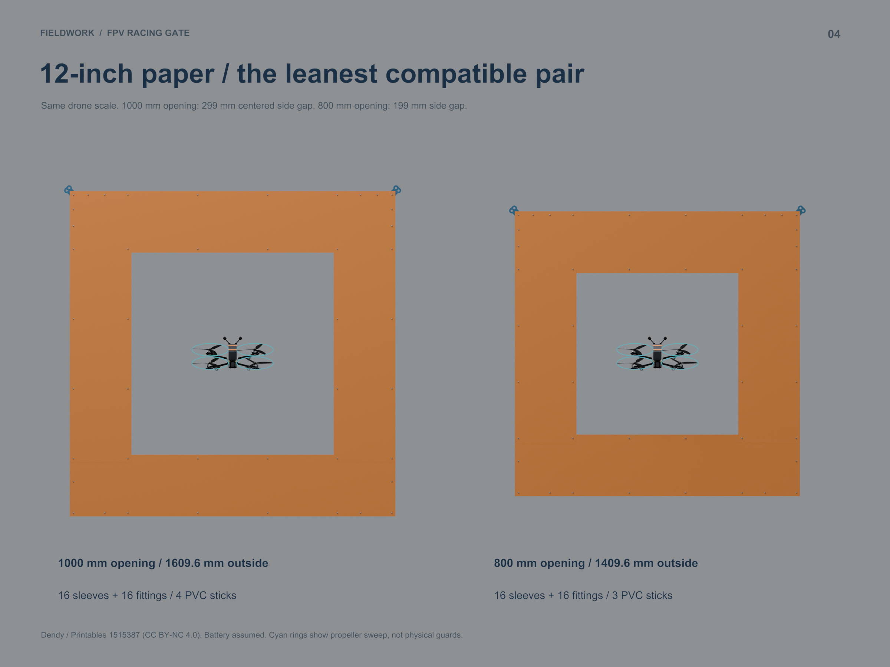
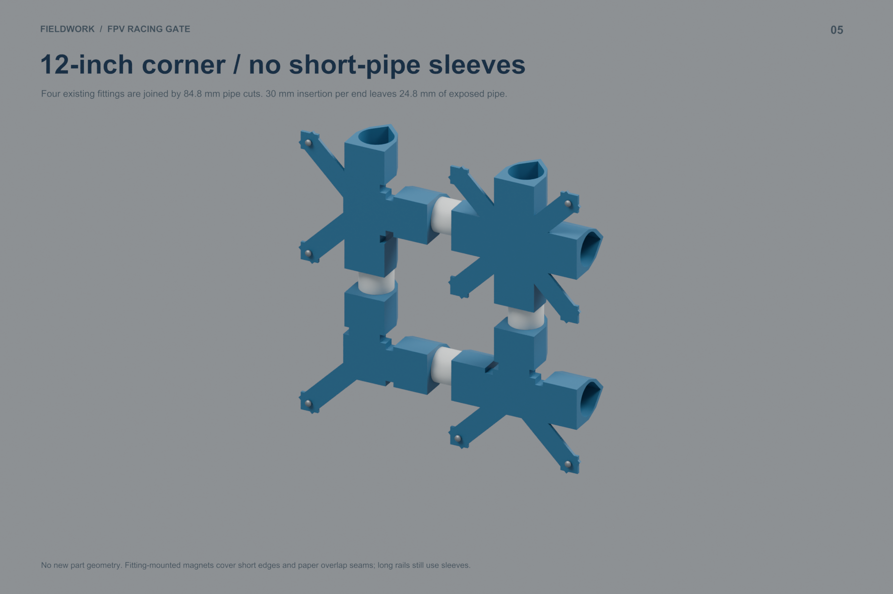

Try a 1000 mm opening with 12-inch paper: 32 printed parts, 1.883 kg PETG and about 74 hours. The 800 mm version uses the same prints and one fewer PVC stick. Both keep the accepted fittings and 33.5 mm bores.
Blender model · PDF · Build study and print queue links · Comparison CSV
| Opening | Paper | Parts | PETG | Time | Subtotal* |
|---|---|---|---|---|---|
| 1000 mm | 24 in | 48 | 2.104 kg | 84h 20m | $55.86 |
| 1000 mm | 18 in | 40 | 1.993 kg | 79h 18m | $49.03 |
| 1000 mm | 12 in | 32 | 1.883 kg | 74h 21m | $42.19 |
| 800 mm | 24 in | 48 | 2.104 kg | 84h 20m | $50.52 |
| 800 mm | 18 in | 40 | 1.993 kg | 79h 18m | $43.69 |
| 800 mm | 12 in | 32 | 1.883 kg | 74h 21m | $36.85 |
*PETG consumed, magnets and whole PVC sticks at the owner's prices. Paper, ground support and guys are additional. Magnet spacing is a design trial, not a tested retention rating.





Blue structural fittings and orange sleeves represent the user's black PETG. Drone reference: Dendy / Printables 1515387, CC BY-NC 4.0; battery assumed. Attribution.